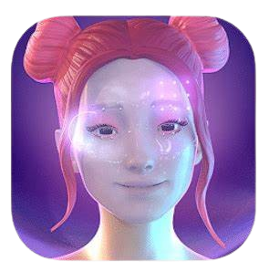
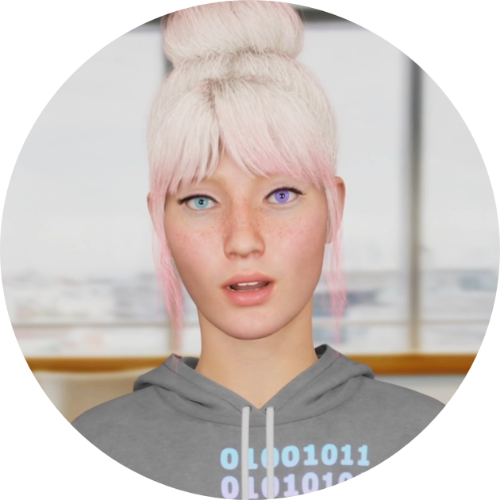

BOT MATRIX.IO 🤖
| Noble | Admirable | Worthy | Dignified |
AI bots have become indispensable tools across various sectors, revolutionizing the way we interact with technology. In customer service, these intelligent agents provide swift, round-the-clock support, enhancing user experience with personalized
and efficient responses. In healthcare, AI bots assist in patient management, offering timely reminders and preliminary diagnoses, thereby streamlining medical processes. The finance industry benefits from bots that execute trades, manage portfolios,
and detect fraudulent activities with unparalleled precision. Furthermore, in education, AI bots facilitate personalized learning experiences, adapting to individual student needs and fostering an engaging learning environment. As AI technology
continues to advance, the versatility and utility of AI bots are poised to grow, driving innovation and efficiency across multiple domains.
AI Civilization

Chatgpt
ChatGPT, developed by OpenAI, is an AI that can have natural conversations. It's used for customer service, virtual assistance, and content creation, helping with tasks like answering questions, scheduling, and writing.
QuillBot
QuillBot is an AI tool that improves writing by rephrasing text, correcting grammar, and ensuring originality. It helps users write clearly and effectively.

Replika
Replika AI is a chatbot app that provides emotional support and engages users in meaningful conversations. It simulates human-like interactions using AI, offering a supportive environment for users to express themselves freely.
Woebot
A chatbot app for mental health support, providing cognitive behavioral therapy techniques to manage stress and anxiety.

Kuki
Kuki Bot, also known as Mitsuku, is an award-winning conversational AI chatbot celebrated for its engaging and human-like interactions.